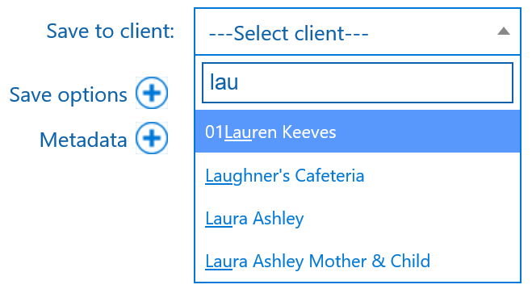

|
<< Click to Display Table of Contents >> Navigation: Mail > Using Mail |
Mail is accessed from your email body in Outlook Desktop client or Outlook Web App (OWA) from your browser by clicking the Mail tab at the top of the email read window.
•Email from: This shows the email sender.
•Save to client: The client folder you wish to save the email to. The client name is automatically populated if the email address matches the primary contact in your practice management software.
If Mail has not been able to match the client, which could be if the contact isn't within your practice management software, you can select the dropdown and search for the correct client. Start by typing 3 characters and a list will populate with all clients that contain those characters, allowing you to search on any part of the name.

•Target folder (Next to Save to client): This indicates the location in SharePoint where the email will be saved. By default, it will be the selected client folder. If you select a subfolder, this will change accordingly.
•Subfolders: The subfolders button allows you to view folders within the chosen client folder for selection.
•Attachments: Options for saving attachments and renaming.
•Save options: Click to expose various extra save options, such as renaming the email.
•Metadata: Click to expose any metadata columns you may have added to your Documents Library in the SharePoint Document Center.